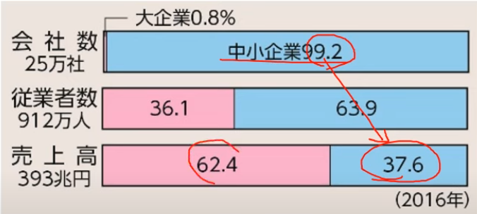
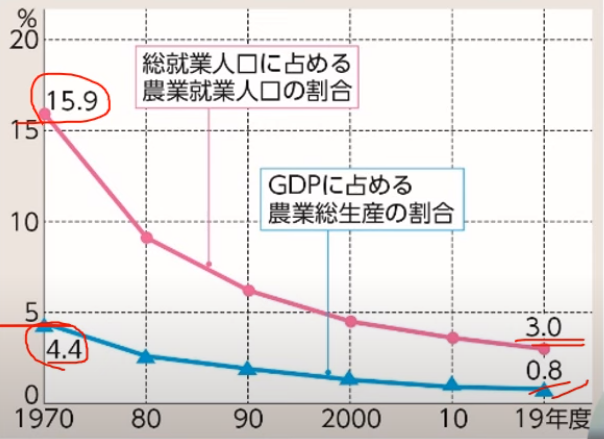

P.170~171 中小企業と農業
中小企業の現状
日本経済というのは有名な大企業だけでなく数多くの中小企業によって支えられている。しかし、その中小企業と大企業の間には生産性や賃金において大きな格差がある。そして大企業と下請け関係を結んでいる中小企業は、大企業の影響下にある場合が多い。
ここで中小企業の定義について以下に示しておく。
| 業種 | 資本金 | 従業員 |
|---|---|---|
| 製造業など | ３億円以下 | 300人以下 |
| 卸売業 | １億円以下 | 100人以下 |
| サービス業 | 5000万円以下 | 100人以下 |
| 小売業 | 5000万円以下 | 50人以下 |
上の表において資本金もしくは従業員のどちらかの条件を満たしていれば中小企業と言える。
次に大企業と中小企業の規模について比較したグラフを以下に示す。

このように中小企業は厳しい状況に置かれている。1990年代以降、数多くの中小企業が倒産した。要因として熟練を要する分野での後継者不足などが挙げられる。
しかし中小企業に可能性がないというわけではない。経営の見直しや新しい事業の開拓によって高度の熟練技術を生み出している。先端産業分野で海外に商品を輸出している企業、特定の商品で高いシェアを誇る企業のことである。
そして少人数のもと、新しい発送で事業を始めるベンチャー企業（スタートアップ）が増えてきている。これには政府の動きが関係しており従来、株式会社の設立には1000万の資本が必要とされていたが2006年より設立に必要な資本が1円になったのだ。
日本の農業とこれから
高度経済成長期（1950~1972）以来、多くの労働力が農村から都市へ移動。よって就業人口や耕地面積が減少傾向にある。また農家の大部分は、農業以外からの収入を多く受け取っている。このような農家は兼業農家と呼ばれる。

上の図からも農業をする人口の減少、GDPに占める農業総生産の割合の減少を観測することができる。
ここで日本は農業基本法というものを1961にとった。これは農業とほかの産業との格差是正を目指したものである。農業よりも農家の保護に重点を置き、米の過剰生産、いわゆる米剰を防ごうとした。
そして1970ごろより米の生産を調整する減反が始まったが、2018年には廃止された。
新食糧法が1994に制定され、1995に施行された。ここでは米の流通などを自由化し、食糧管理制度を廃止した。また、1999に制定された食料・農業・農村基本法では食料の安定供給の確保、農業の持続的な発展などが目的とされここで農業基本法が廃止となった。 そして農産物の輸入自由化も行われた。果物、野菜、米について関税をかけることで輸入を認めた。
日本の産業の現状
高齢化が進む一方で、後継者不足が深刻化。兼業が多く、小規模のため生産性が低く、国内の産地どうしや輸入農産物との厳しい競争に勝てなくなっていることが要因になっている。
大規模生産（労働生産性）を上げることも重要である。農事組合法人（企業）を作ったり、一般の企業が農業に参入したりするなどして耕地の面積が増え、機材の共用も進んでいる。また転職者の受け入れによる後継者の育成も期待したいところである。
食料安全保障について
国際的に見て日本は食料自給率が低いためそれを引き上げる意識が重要である。食の安全や、巨大な食品ロスに対する消費者の関心の高まりを利用し、情報通信技術を活用し、省力化や生産性の向上を目指すスマート農業に邁進するべきだろう。また、日本政府は農林水産物の輸出促進に取り組んでいる。